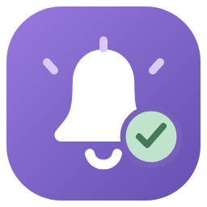
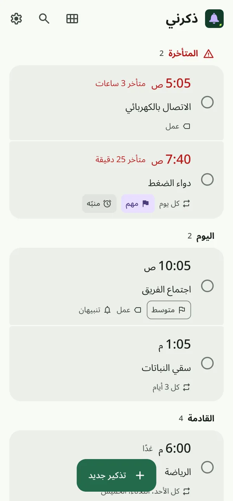

تنبيهات تبقى
إشعار ثابت فيه «تم» و«أجّل 10 دقائق» و«أجّل حتى…»، وشاشة تنبيه كاملة للتذكيرات المهمة. «المنبّه المهم» يرن بصوت المنبّه حتى في الوضع الصامت.

ذكرني (Remember Me™) · تذكيرات لأندرويديُبقي ذكرني لأندرويد كل تذكير على هاتفك حتى تضغط «تم» أو تؤجّله. بلا حساب ولا إعلانات، بالعربية أولًا مع الإنجليزية، وهو مفتوح المصدر.
مجاني · أندرويد 8.0 وأحدث · بالعربية والإنجليزية · ليس على Google Play

المميزات
تُحفظ تذكيراتك على هاتفك، في ملف البيانات نفسه الذي يستعمله ذكرني لويندوز.
إشعار ثابت فيه «تم» و«أجّل 10 دقائق» و«أجّل حتى…»، وشاشة تنبيه كاملة للتذكيرات المهمة. «المنبّه المهم» يرن بصوت المنبّه حتى في الوضع الصامت.
اكتب «اجتماع غداً الساعة 5» بالعربية أو الإنجليزية فيفهم التاريخ والوقت، مع معاينة قبل الحفظ. وقوالب، وإدخال صوتي، وزر في الإعدادات السريعة.
يوميًا وأسبوعيًا وفي أيام تختارها وكل عدة أيام وشهريًا مع نهاية الشهر وسنويًا، وتواريخ هجرية، ومواعيد نسبةً إلى أوقات الصلاة.
المتأخر واليوم والقادم والمنجز في قائمة واحدة، مع البحث والقوائم والوسوم والخطوات، وعرض الأجندة واليوم والأسبوع والشهر.
تفحص ما قد يؤخر التنبيه على هاتفك، مثل قيود البطارية أو المنبّهات الدقيقة، وتقترح إصلاحًا واحدًا لكل مشكلة. و«اختبر التنبيه الآن» يريك أنه يعمل.
نسخ احتياطي مشفّر، ونسخة أسبوعية تلقائية في مجلد تختاره، واستيراد التقويم وتصديره، ونقل النسخ من ذكرني لويندوز وإليه.
الخصوصية
التثبيت
ذكرني لأندرويد ليس على Google Play، لذا تثبّت الملف بنفسك. سيطلب أندرويد السماح بالتثبيت من التطبيق الذي نزّلت به الملف.
RememberMe-X.Y.Z.apk من آخر إصدار على GitHub، على هاتفك.التحديثات
في الإعدادات زر «تحقق من التحديثات»، ويتحقق التطبيق بنفسه من إصداراته على GitHub مرة في الأسبوع على الأكثر، عبر Wi-Fi فقط افتراضيًا. لا يُثبَّت تحديث إلا إذا كان أحدث، وطابقت بصمته (SHA-256) ملف SHA256SUMS.txt في الإصدار، ووُقّع بمفتاح التطبيق نفسه، ثم بموافقتك في شاشة أندرويد. يرى GitHub عنوان IP الخاص بك كأي موقع.
ويمكنك التحديث يدويًا: نزّل أحدث ملف APK وثبّته فوق القديم، وتبقى تذكيراتك.
مجاني. ملف APK واحد، من إصدارات التطبيق الرسمية على GitHub.
في كل إصدار ملف SHA256SUMS.txt فيه بصمة SHA-256 لملف APK. للمقارنة على الحاسوب شغّل الأمر Get-FileHash على الملف (ويندوز) أو sha256sum (لينكس وماك).
بصمة شهادة التوقيع (SHA-256): 8d3b91dcacced148d11a51fb1333a509581ed2ce04ff362f2882c7cda6ae6e26. يرفض أندرويد أي تحديث غير موقّع بهذه الشهادة.
يُبنى الملف ويوقَّع على حاسوب المطوّر، لا على GitHub، فلا توجد له شهادة بناء من GitHub. وفي كل إصدار قائمة بمكوّناته (SBOM).
فقط للتحقق من التحديثات وتنزيلها من GitHub، ويمكنك التحقق يدويًا بدلًا من ذلك. التذكيرات والتنبيهات والنسخ الاحتياطي كلها تعمل على هاتفك دون إنترنت. أما الإدخال الصوتي فيستعمل خدمة الكلام في هاتفك، وقد تستعمل تلك الخدمة الإنترنت من جهتها.
يُنشر ذكرني لأندرويد في إصداراته على GitHub فقط. لهذا يطلب أندرويد في المرة الأولى السماح بالتثبيت من هذا المصدر.
تظهر هذه الرسالة لكل تطبيق لا يأتي من متجر. نزّل الملف من إصداراتنا على GitHub فقط، ويمكنك مقارنة بصمته (SHA-256) بملف SHA256SUMS.txt في الإصدار.
بعض الهواتف تقيّد التطبيقات في الخلفية لتوفير البطارية. افتح «صحة التذكيرات» في التطبيق: تريك ما يقيّده هاتفك وكيف تصلحه، و«اختبر التنبيه الآن» يتحقق من النتيجة.
لا. ذكرني لويندوز تطبيق منفصل وليس مفتوح المصدر. يقرأ تطبيق أندرويد صيغة النسخ الاحتياطي نفسها ويكتبها، فتستطيع نقل تذكيراتك بينهما.
نعم. ذكرني لأندرويد مفتوح المصدر برخصة Apache-2.0، مع تعليمات البناء في مستودعه على GitHub. الاسم والأيقونة علامتان تجاريتان لا تشملهما الرخصة.